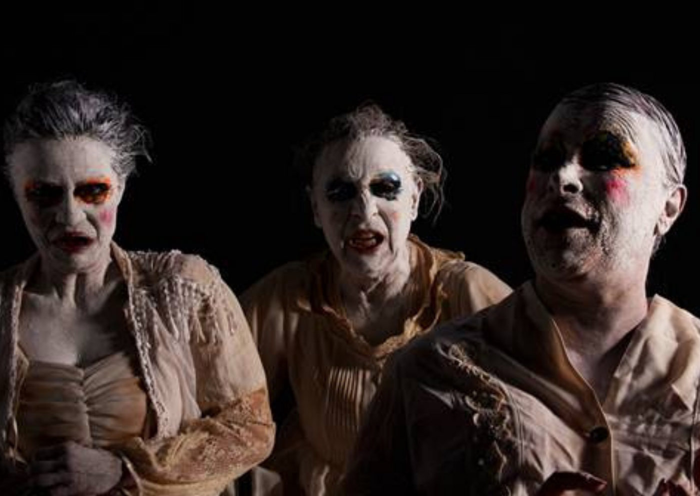

“As Três Velhas”, de Alejandro Jodorowsky, ganha montagem gratuita em três teatros de São Paulo

Nova produção do Teatro Kaus Cia Experimental aposta no grotesco e no surreal para refletir a decadência humana e social com humor ácido e crítica feroz. A temporada é gratuita e percorre os teatros Arthur Azevedo, Cacilda Becker e Alfredo Mesquita entre agosto e outubro.
A decadência física, psíquica e social é o pano de fundo de As Três Velhas, novo espetáculo do Teatro Kaus Cia Experimental, que estreia no Teatro Arthur Azevedo no dia 14 de agosto, com entrada gratuita. A peça segue em circulação pelos teatros Cacilda Becker (setembro) e Alfredo Mesquita (outubro), sempre com apresentações de quinta a domingo e sessões com intérprete de Libras em datas selecionadas.
Baseado no texto do multiartista Alejandro Jodorowsky, As Três Velhas foi escrito em 2003 e nunca havia sido encenado no Brasil. A montagem tem tradução de Aimar Labaki e direção de Reginaldo Nascimento, um dos fundadores do grupo, que desde 1998 pesquisa o teatro do absurdo e a dramaturgia hispano-americana.
Um melodrama grotesco sobre a ruína de tudo
Na trama, duas irmãs gêmeas octogenárias, Meliza e Grazia, vivem em uma mansão decadente, devastadas pela fome e pelo abandono, sob os olhares da centenária criada Garga. No espaço em ruínas — físico e simbólico — o trio mergulha em delírios, segredos do passado e jogos perversos, dando forma a uma encenação que mistura humor escatológico, erotismo grotesco e crítica feroz às hipocrisias sociais.
“Desde sempre gostamos de retratar personagens à beira do abismo, que dialogam com o desespero e com a morte. Queríamos montar Jodorowsky há mais de 15 anos, e As Três Velhas nos deu a chance de trabalhar com um texto que reúne absurdo, surrealismo e crítica social sob uma lente grotesca”, explica o diretor Reginaldo Nascimento.
A obra encena temas como hipocrisia social, violência patriarcal, etarismo e a objetificação dos corpos femininos, tudo envolto numa estética onde o riso e o horror se entrelaçam. “Mesmo vivendo na penúria, as irmãs se orgulham de seus títulos de nobreza e sonham com um príncipe encantado. São personagens absurdas, trágicas, e ao mesmo tempo extremamente humanas”, pontua Amália Pereira, também fundadora da companhia e atriz em cena ao lado de Tânia Granussi e Vera Monteiro.
Estética do grotesco e crítica ao patriarcado
Definida por Jodorowsky como um “melodrama grotesco”, a peça propõe uma encenação radical em que a velhice feminina — geralmente invisibilizada ou estigmatizada — assume o protagonismo. “Falar do feminino e da velhice eram dois assuntos que nos interessavam muito, ainda mais explorando o grotesco como linguagem. A peça escancara como a sociedade transforma tudo e todos em mercadoria, inclusive os afetos”, completa Amália.
Com mais de 25 anos de trajetória, o Teatro Kaus reafirma sua linha de pesquisa voltada ao surrealismo, ao teatro do absurdo e à dramaturgia crítica latino-americana. Os últimos trabalhos do grupo apostaram em questões filosóficas; agora, As Três Velhas propõe uma guinada estética em direção ao grotesco e ao simbólico, mantendo o foco nas urgências contemporâneas.
SINOPSE
As gêmeas octogenárias Meliza e Grazia, duas marquesas decadentes, vivem em uma mansão em ruínas. Devastadas pela fome e pelo abandono, são vigiadas pela centenária criada Garga. Entre lembranças distorcidas, jogos perversos e devaneios grotescos, elas alimentam fantasias de juventude, erotismo e poder. A peça mistura horror e riso para revelar as feridas da velhice, da solidão e de uma sociedade em ruínas, onde tudo é passível de venda — inclusive a dignidade.
SERVIÇO
Espetáculo: As Três Velhas Duração: 70 minutos Classificação indicativa: 16 anos Entrada: Gratuita — retirada de ingressos 1h antes de cada sessão na bilheteria
📍 Teatro Arthur Azevedo
🗓 De 14 a 24 de agosto
🕘 Quinta a sábado, 21h | Domingo, 19h
📍 Av. Paes de Barros, 955 - Alto da Mooca
📞 (11) 2604-5558
♿ Acessível | Sessões com Libras: 15 e 22 de agosto
📍 Teatro Cacilda Becker
🗓 De 4 a 14 de setembro
🕘 Quinta a sábado, 21h | Domingo, 19h
📍 R. Tito, 295 - Lapa 📞 (11) 3864-4513
♿ Acessível | Sessões com Libras: 5 e 12 de setembro
📍 Teatro Alfredo Mesquita
🗓 De 25 de setembro a 5 de outubro
🕘 Quinta a sábado, 20h | Domingo, 19h
📍 Av. Santos Dumont, 1770 - Santana
📞 (11) 2221-3657
♿ Acessível | Sessões com Libras: 26 de setembro e 3 de outubro